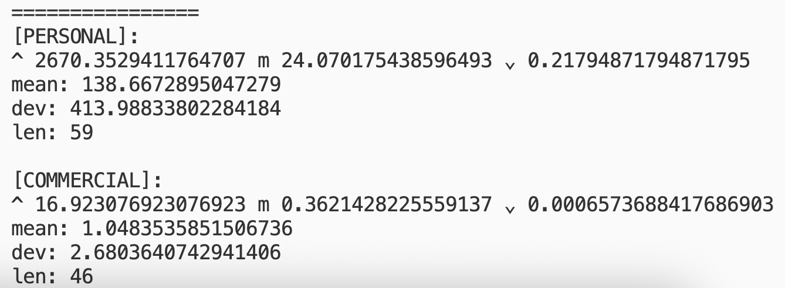
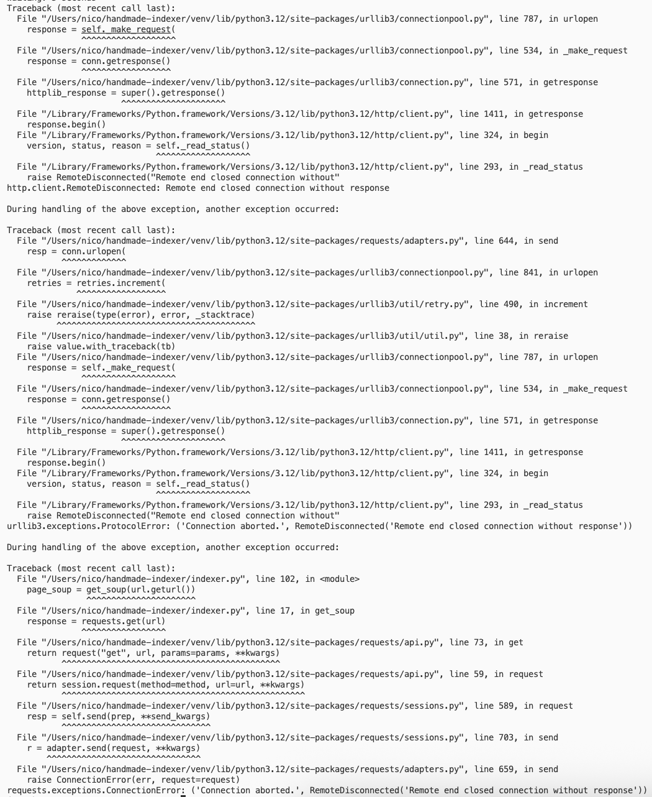
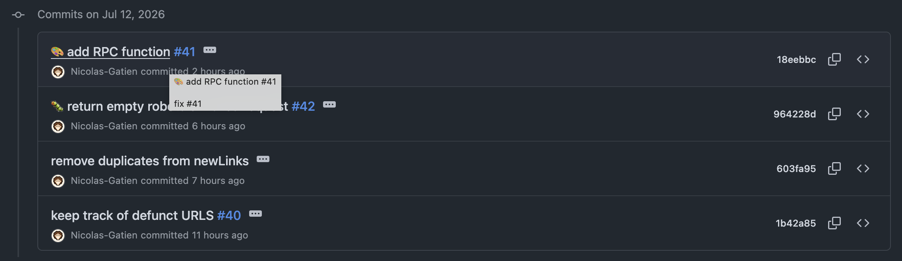
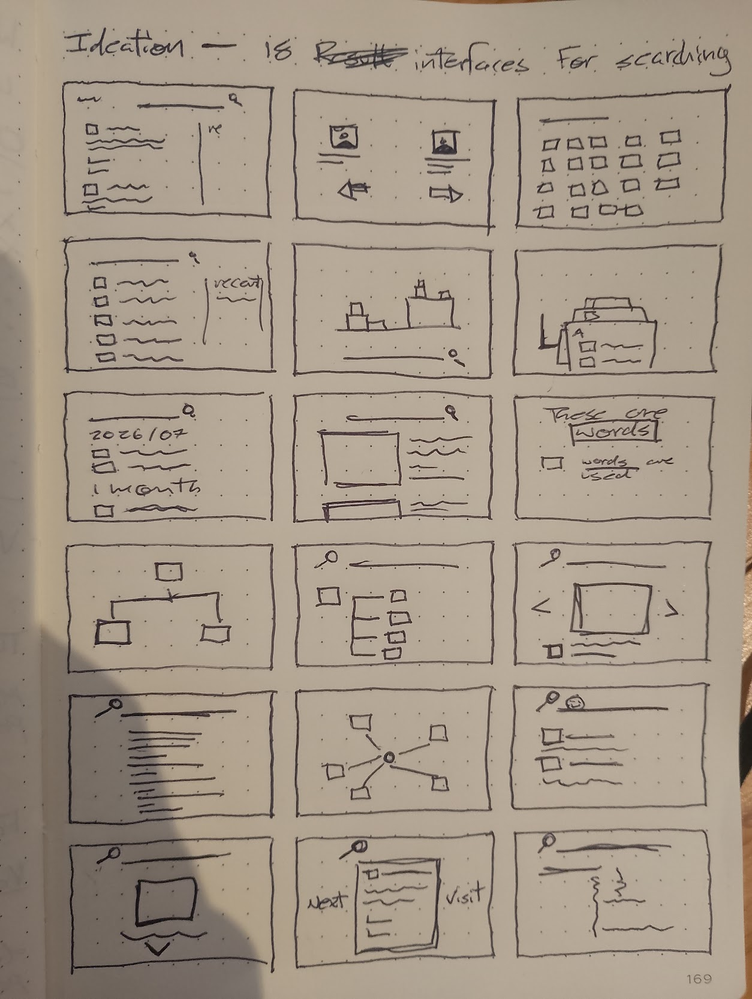
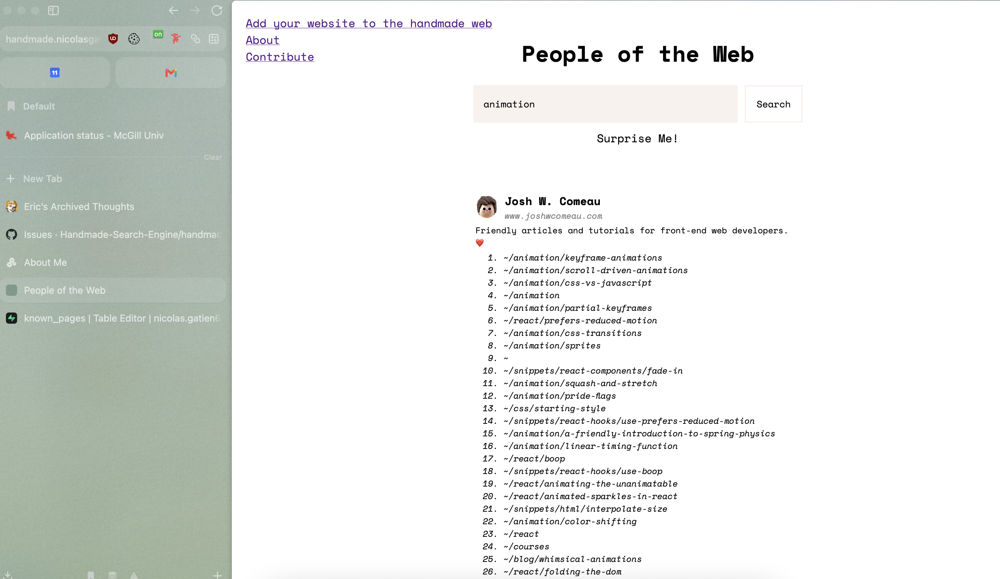
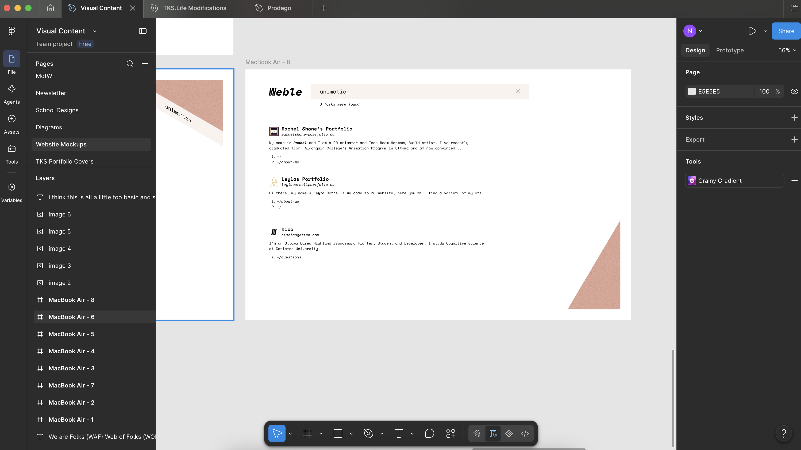
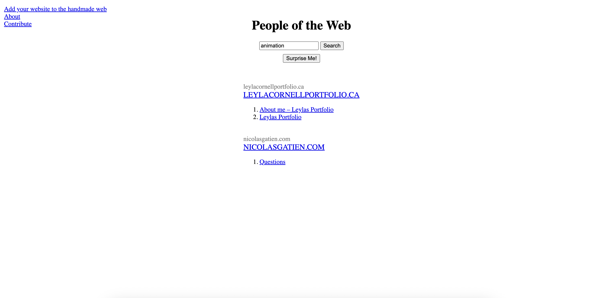
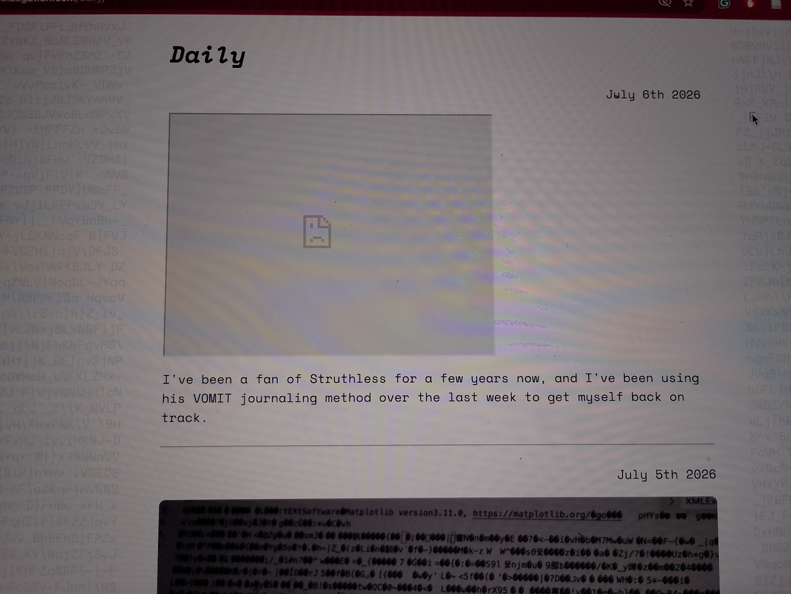

Daily
July 20th 2026

Of the sites I currently have indexed in my preliminary dataset from nownownow.com, it seems that I've found a feature which is consistently distinct among personal and commercial websites: higher use of singular pronouns than plural pronouns on pages where they are both used. The image above displays a calculated score.
July 13th 2026

My go web crawler has now crawled >3k pages! I started running my indexer to add them to my search engine's index and it instantly ran into a problem. First thing for tomorrow I suppose!
July 12th 2026

Made good progress on my web crawler today. Also thinking that for my paper, using all the sites from nownownow.com wouldn't work, because I noticed some of them were still commercial sites (but with a now page).
July 11th 2026

Made a few rather quick sketches for possible interface designs. I gave myself 30 seconds to draw each one.
July 10th 2026

I implemented the mockups for my search engine and expanded the index. Fixed a few bugs as well with my web crawler. Check it out!
July 9th 2026

Working on some mockups for my search engine! Right now they feel really basic, I'd like to come up with a theme for it and make the mockups much more stylized.
July 8th 2026

I made some modifications to my search engine to focus on people rather than pages. This way it's more of a search engine for people who write about topics rather than pages about specific topics. I also reset my index to do this, so it just has a couple websites now.
July 7th 2026

Yesterday I embedded an iframe video for the first time on my website, but it wasn't actually loading. Turns out to embed a video you need to use the embed link, not the watch link... It's fixed now! I also added a little css to iframes so it matches the rest of my site.
July 6th 2026
I've been a fan of Struthless for a few years now, and I've been using his VOMIT journaling method over the last week to get myself back on track.
July 5th 2026

The websites with very long median sentence lengths were caused because the word counter was trying to interpret image files as text. I've fixed it now, but I do unfortunately need to run the whole thing again and pull all 1k websites. I'll make sure to make regular stops to check that all the data looks right.
July 4th 2026

Generated the first visualization of data for my peripheral web project. There seems to be something wrong in the way I'm counting words in a sentence, because there are a few websites that have a median sentence length of over 100 words...
July 3rd 2026

Registered to the last two highschool courses I need to take to enter the biology program. Grade 12 Chemistry and Grade 12 Biology, registered with TVO ILC.
July 2nd 2026

Still no internet today, so I am on campus assembling my dataset for my analysis on personal websites. I'm using the index from nownownow.com for personal websites, and top10million to get a list of commercial websites.
July 1st 2026

The internet is down at my house today, so I'm coding without any access to search. Currently working on the page you are looking at! (it's rather simple work, just some HTML and CSS)